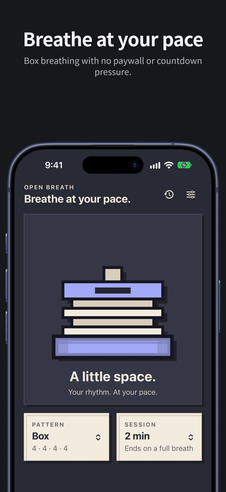
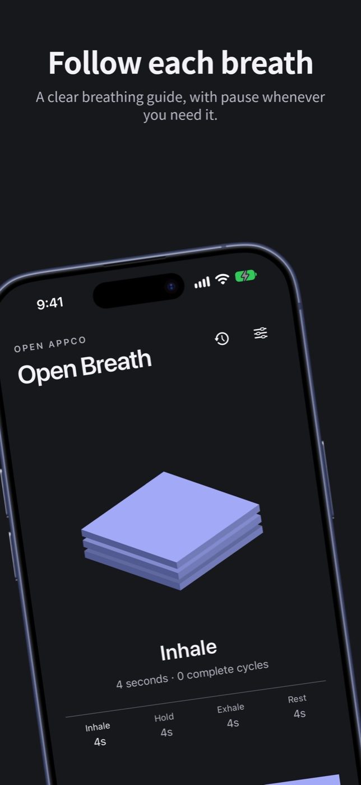
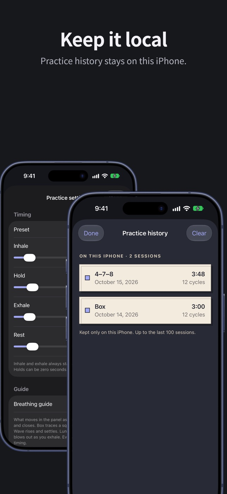

“now you have to pay for a subscription to use it.”
What Open Breath does instead
Box breathing is available without a subscription, paywall, or countdown pressure.
Open AppCo app #5
Breathe at your pace. Box breathing with no paywall or countdown pressure.
Apple is reviewing version 1.0.0 (build 4).
The actual app



Physical-device check
The submitted build running on a real iPhone.
Why this app exists
“now you have to pay for a subscription to use it.”
Box breathing is available without a subscription, paywall, or countdown pressure.
This page uses the manually verified public review excerpt that originally put this app in the Open AppCo queue. New releases publish the wider recorded-feed coverage and every verified complaint category they claim to address.